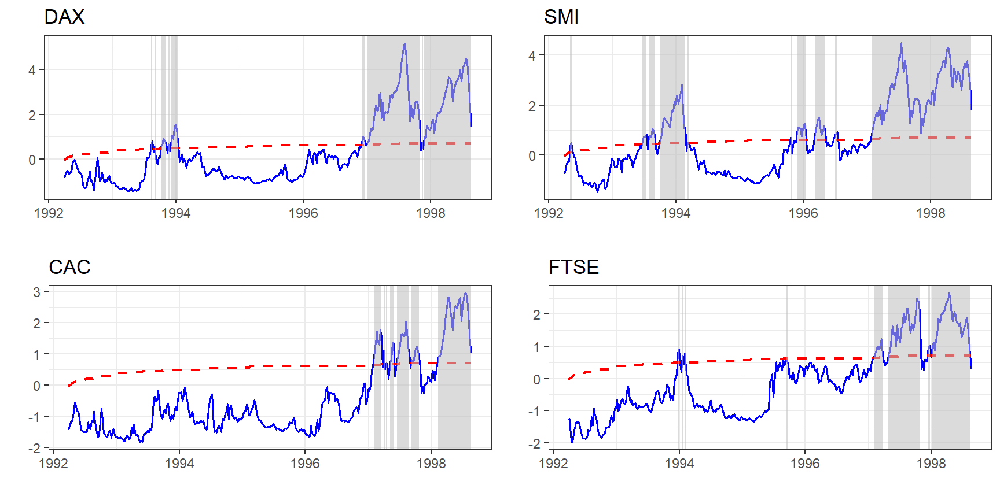
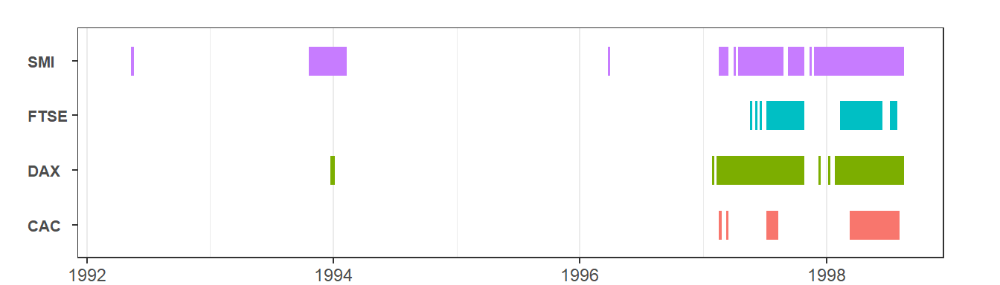

For our analysis we are going to use the datasets::EuStockMarkets dataset, which contains the daily closing prices of four major European stock indices: Germany DAX (Ibis), Switzerland SMI, France CAC, and UK FTSE(see ?EuStockMarkets). The data are sampled in business time, i.e., weekends and holidays are omitted. In this particular exercise we want to focus on weekly observations. To do so we aggregate to a weekly frequency and reduce the number of observations from 1860 to 372.
We estimate the above series using the recursive Augmented Dickey-Fuller test with 1 lag.
The summary will print the t-stat and the critical values for 90, 95 and 99 significance level. The package provides simulated critical values, so we use them by not specifying the cv argument into the summary function.
summary(est_stocks)
#>
#> -- Summary (minw = 38, lag = 1) -------------------------------------- Monte Carlo (nrep = 2000) --
#>
#>
#> DAX
#> tstat 90% 95% 99%
#> ADF 1.453 -0.4474 -0.133 0.4789
#> SADF 4.951 1.0919 1.435 1.9664
#> GSADF 5.183 1.9050 2.100 2.5998
#>
#> SMI
#> tstat 90% 95% 99%
#> ADF 1.770 -0.4474 -0.133 0.4789
#> SADF 4.284 1.0919 1.435 1.9664
#> GSADF 4.493 1.9050 2.100 2.5998
#>
#> CAC
#> tstat 90% 95% 99%
#> ADF 0.987 -0.4474 -0.133 0.4789
#> SADF 2.909 1.0919 1.435 1.9664
#> GSADF 2.966 1.9050 2.100 2.5998
#>
#> FTSE
#> tstat 90% 95% 99%
#> ADF 0.1945 -0.4474 -0.133 0.4789
#> SADF 2.5563 1.0919 1.435 1.9664
#> GSADF 2.6689 1.9050 2.100 2.5998It seems that all stocks exhibit exuberant behaviour but we can also use a diagnostics() to do it for us. This is extremely useful when we deal a lot of series.
diagnostics(est_stocks)
#>
#> -- Diagnostics (option = gsadf) ---------------------------------------------------- Monte Carlo --
#>
#> DAX: Rejects H0 for significance level of 1%
#> SMI: Rejects H0 for significance level of 1%
#> CAC: Rejects H0 for significance level of 1%
#> FTSE: Rejects H0 for significance level of 1%The autoplot.radf function returns a list of ggplot2, thus we need to grob the list into a single graph. Function ggarrange does this for us, while we can specify the arrangement of the graphs by supplying nrow and ncol arguments.

If we need to know the exact period of exuberance we can do so with the function datestamp(). datestamp() works in a similar manner, where the user has to specify the critical values, however we can still utilize the package’s critical values by leaving the cv-argument blank.
# Minimum duration of an explosive period
rot = round(log(nrow(stocks))) # log(n) ~ rule of thumb
datestamp(est_stocks, min_duration = rot)
#>
#> -- Datestamp (min_duration = 6) ---------------------------------------------------- Monte Carlo --
#>
#> DAX :
#> Start End Duration
#> 1 1997-02-10 1997-10-28 38
#> 2 1998-01-27 1998-08-19 30
#>
#> SMI :
#> Start End Duration
#> 1 1993-10-21 1994-02-10 17
#> 2 1997-04-14 1997-08-26 20
#> 3 1997-09-09 1997-10-28 8
#> 4 1997-11-25 1998-08-19 39
#>
#> CAC :
#> Start End Duration
#> 1 1997-07-08 1997-08-12 6
#> 2 1998-03-10 1998-08-05 22
#>
#> FTSE :
#> Start End Duration
#> 1 1997-07-08 1997-10-28 17
#> 2 1998-02-10 1998-06-17 19Finally, we can plot just the periods the periods of exuberance. Plotting datestamp object is particularly useful when we have a lot of series, and we are interested to identify explosive patterns.
